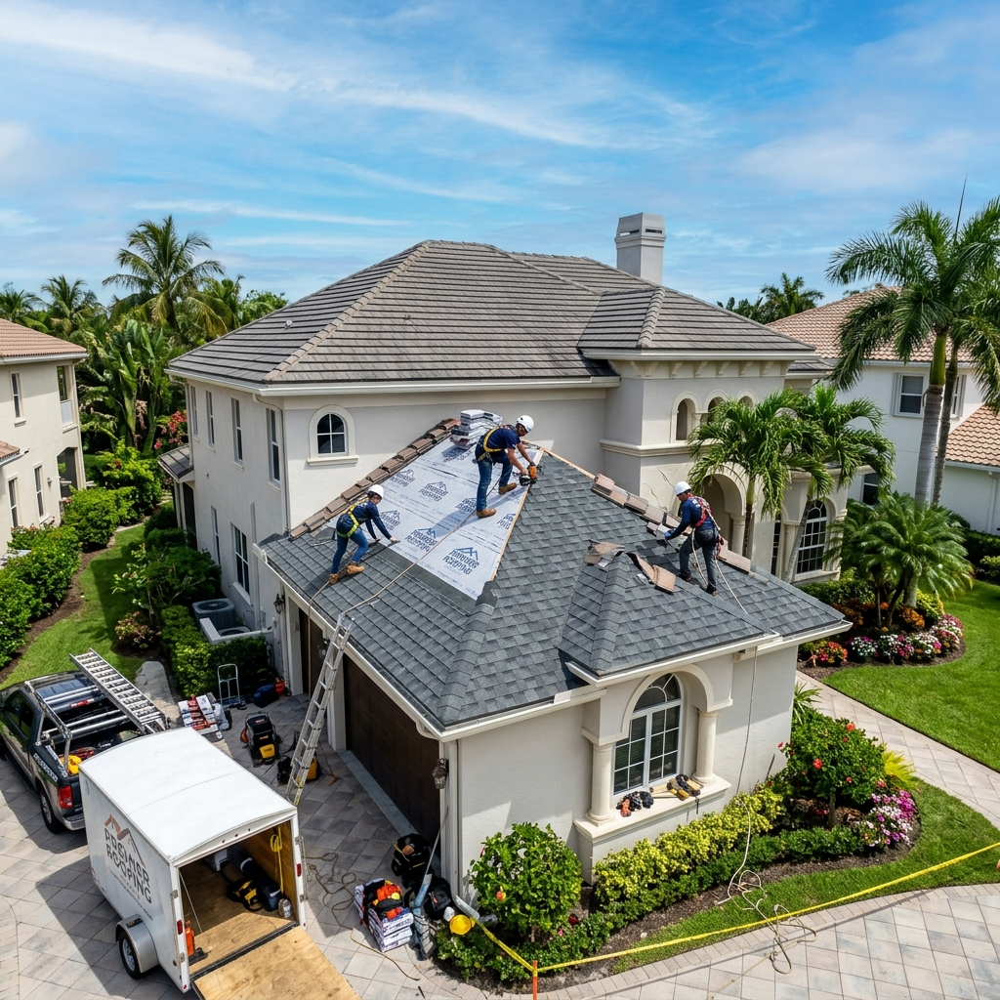

Choosing a reliable residential roofing contractor in Fort Lauderdale requires verifying active state licensing, checking local Broward County wind mitigation credentials, and demanding structured milestone-based payments. Homeowners must prioritize local code compliance to ensure their new roofs survive major Florida hurricanes and meet strict insurer standards. By focusing on certified local specialists, you can protect both your home investment and your budget.

Why Selecting the Right Residential Roofer Protects Your South Florida Home
Your roof is the primary defense system against intense South Florida weather, making your choice of contractor a high-stakes decision. High-velocity winds, heavy tropical downpours, and intense UV exposure constantly test the limits of residential roofing materials in Broward County. Hiring an uncertified or inexperienced installer often results in hidden deck damage, compromised flashing, and premature failures that regular homeowners cannot spot from the ground. Ultimately, choosing a certified roofing specialist secures your property's safety, keeps your home fully insurable under strict Florida rules, and prevents extremely costly future repairs.
Verify Active Florida Licenses and Specialized Liability Insurance
Before signing any roofing contract, you must verify that the contractor holds an active license like CCC1329271 or CGC1517295 through the Florida Department of Business and Professional Regulation (DBPR). Working with unlicensed roofers can lead to severe structural failures and leaves you personally liable for worker injuries. A professional roofer will readily provide proof of extensive general liability and workers' compensation coverage specific to Florida's high-risk environment. This step ensures that your Fort Lauderdale home is fully protected from any accident during the installation process.
Demand Written Estimates with Structured Milestones Instead of Full Upfront Payment
A trusted local contractor will never ask you to pay the entire project cost before the work begins. Instead, professional roofing agreements outline structured progress payments tied directly to verifiable project milestones, such as material delivery, dry-in, and final building inspection. You should always demand a detailed written estimate that itemizes material costs, labor, disposal fees, and permit applications. This clear documentation ensures total financial transparency and protects your budget throughout the entire construction cycle in Fort Lauderdale.
Ensure Compliance with Local Broward County Permitting and Code Inspections
Florida has some of the strictest building codes in the nation, and skipping proper permit filings can lead to massive fines and invalidate your home insurance policy. Your roofing contractor must handle the entire permit application process with the local municipal building department before removing a single shingle. They must also schedule mandatory inspections, including the crucial deck and in-progress roof inspections, to verify that every component complies with current safety regulations. These official code checks guarantee that your home remains fully compliant with the latest Broward County standards.
Confirm Manufacturer Certifications for Hurricane-Grade Roofing Materials
To survive extreme winds and intense UV radiation, your roof must utilize high-quality, certified materials from top brands like GAF, CertainTeed, or Owens Corning. Working with a manufacturer-certified contractor ensures that your materials are installed according to exact brand specifications, making you eligible for extended system warranties. These credentials guarantee that your shingle, tile, or metal systems are rated to withstand the specific wind velocity requirements of your South Florida neighborhood. Verifying these material certifications is critical to securing long-term durability and lower insurance premiums.
The South Florida Hurricane Angle: Why Local Wind Mitigation Standards Matter
Fort Lauderdale homes sit within the High Velocity Hurricane Zone (HVHZ), which dictates extremely strict building standards to prevent wind uplift during severe storms. The Florida Building Code requires specific underlayment materials, enhanced nail patterns, and robust flashing details designed to survive winds exceeding 170 mph. Hiring a local contractor familiar with these unique Broward County codes guarantees your installation qualifies for maximum wind mitigation insurance discounts. This local expertise keeps your family safe and significantly lowers your yearly property insurance costs.
Your Practical Steps to Hire a Reliable Roofer in Broward County
- Check the Florida DBPR Portal: Search the official state website using the contractor’s license number to verify they are active and have no outstanding complaints.
- Ask for Local Project References: Request to see recent residential roofing installations in Fort Lauderdale or nearby Broward County neighborhoods to evaluate their work firsthand.
- Schedule a Detailed Attic and Roof Inspection: A professional must inspect your attic ventilation and roof deck before proposing a replacement to identify hidden deck rot or structural weakness.
- Review the Detailed Milestone Contract: Make sure all pricing, material brands, permit fees, warranties, and clean-up terms are explicitly documented in a signed agreement.
- Secure Your Final Permit Sign-Off: Never release the final progress payment until the local building department conducts its final inspection and officially closes the active permit.
Frequently Asked Questions
For an average-sized home in Fort Lauderdale, a complete roof replacement generally takes between three to five working days of active construction. However, the overall timeline from contract signing to final inspection spans several weeks due to municipal permit processing and scheduling required building department inspections. Unpredictable South Florida weather, particularly afternoon summer thunderstorms, can also cause minor delays as crews prioritize keeping your home dry and safe.
The cost of a new roof in Broward County typically ranges from $10,000 to $30,000 or more, depending on your home's square footage and your chosen material, such as shingle, tile, or metal. Additional factors like roof pitch, hidden structural rot repairs, and municipal permit fees also influence the final investment. Because every property is unique, scheduling a professional inspection is the only way to get a precise, written quote tailored to your home.
Completing DIY roof repairs is highly discouraged in South Florida due to severe safety hazards, the complexity of wind-mitigation codes, and the risk of invalidating your homeowner's insurance policy. Licensed professionals possess specialized fall-protection equipment and the technical training required to identify underlying structural issues that are invisible to untrained eyes. Improperly executed repairs can lead to active leaks, structural rot, and expensive code violations that cost more to fix in the long run.
South Florida residential roofs must withstand intense wind uplift, salt air corrosion, and relentless UV exposure, requiring heavy-duty, hurricane-rated materials that meet High Velocity Hurricane Zone (HVHZ) requirements. Installing certified systems from leading brands like GAF or CertainTeed ensures that your shingles or tiles remain anchored during extreme tropical storm conditions. Furthermore, qualifying for wind mitigation inspections with these materials is often necessary to secure affordable home insurance coverage in Broward County.
You can confirm a contractor's legal status by searching their state license number (such as CCC1329271) on the official Florida Department of Business and Professional Regulation (DBPR) portal. A reputable roofer will always be registered to work in your specific Broward County municipality and will pull all required building permits before starting any job. Homeowners should avoid any contractor who asks them to pull an 'owner-builder' permit, as this shifts all legal and safety liabilities directly onto you.
Hire a Trusted Local Roofer in Fort Lauderdale, FL
Protecting your home from South Florida's harsh tropical climate starts with choosing a qualified local professional who understands the unique wind mitigation codes of Broward County. We serve homeowners across Fort Lauderdale and surrounding areas, providing honest guidance, detailed attic-to-roof inspections, and clear payment options. Let our certified team help you secure a durable, code-compliant roof that keeps your family safe and lowers your insurance costs. Contact us today at (954) 600-1462 to schedule your free, no-pressure inspection.